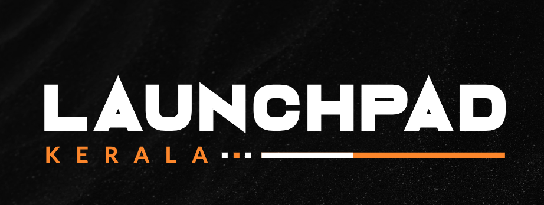

WHAT IS LAUNCHPAD KERALA ?
One of the most prestigious event of IEEE Kerala Section and GTech MuLearn that is determined to serve the goal of creating opportunities for engineering students and graduates.
BENIFITS FOR STUDENTS
- Networking Opportunities
- Access to Industry Insights
- Exposure to Diverse Career Paths
- Exposure to Diverse Career Paths
Students have the chance to network with professionals and representatives from a variety of innovative companies. This allows them to establish valuable connections for potential internships, co-op opportunities, and future employment.
Attending the job fair gives students exposure to the latest trends, technologies, and challenges in their field. They can gain insights into industry best practices, upcoming projects, and the skills in demand by speaking directly with industry professionals.
Attending the job fair gives students exposure to the latest trends, technologies, and challenges in their field. They can gain insights into industry best practices, upcoming projects, and the skills in demand by speaking directly with industry professionals.
Participating in Launchpad Kerala 2024 offers students a transformative experience, fostering personal growth and development. Through the assessment process, students push their limits, embrace new opportunities, and cultivate resilience, adaptability, and self-confidence.
PROCESS
- Online Registration
- Confirmation Via Email
- Join the Gtech Discord Mulearn Community
- Technical Challenges(Discord Tasks)
- Online Aptitude Test
- Publishing The Results
- Interview For Selected Candidates